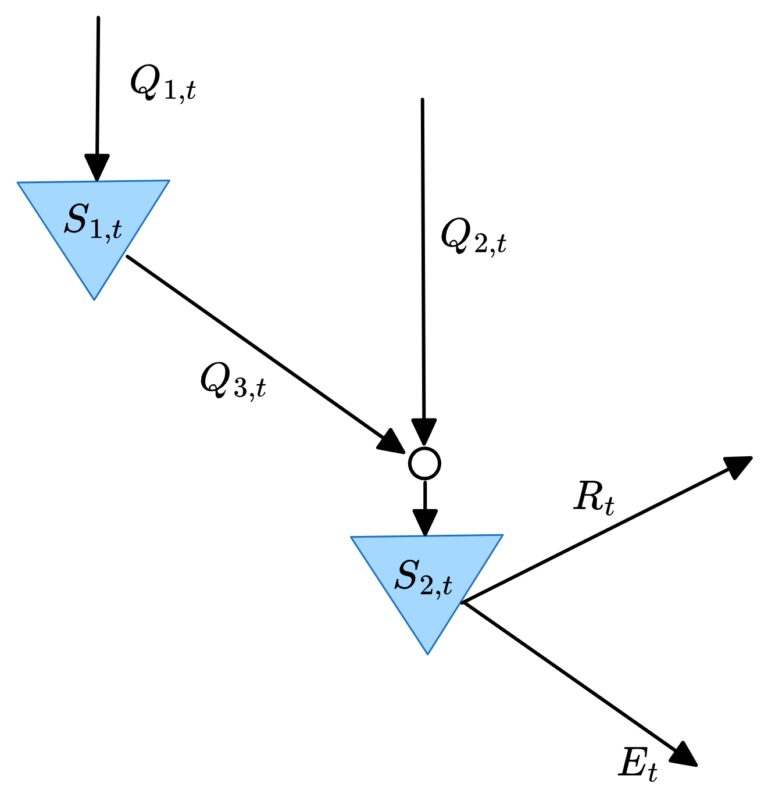
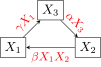

Introduction to Systems Analysis
Lecture 02
August 26, 2025
Review of Last Class
Course Policies
If you missed class last week, make sure you read the syllabus!.
Recap of Grading Policies
- Tag pages on Gradescope which are relevant for a given problem (labs this is the whole thing sans the intro/setup).
- Explain what your code is trying to accomplish outside of the code block.
- For example: here are the equations you’re implementing or this is how you’re iterating through a problem.
- Make sure you include all elements needed for interpretation of e.g. plots.
- When in doubt, ask!
Questions?

Text: VSRIKRISH to 22333
Modeling Systems
How Do We Develop Models?
- Mass balance equations let us track changes in stocks at particular points;
- Equilibrium conditions are requirements that there is no net flow, and thus that stocks are preserved;
- Fate and transport modeling involves quantifying how stocks change as they move through the system.
Systems Analysis
What We Study
- System dynamics;
- Response to inputs;
- Alternatives for management or design.
Needs
- Definition of the system
- System model
What Do We Need To Define A System?
- Components: relevant processes, agents, etc
- Interconnections: relationships between system components
- Control volume: unit of the system we are trying to model and/or manage
- Inputs: control policies and/or external forcings
- Outputs: measured quantities of interest
Example: Reservoir System

Figure 1: Illustration of a system, including notation.
What Is A Model?

{kind=link}
Mathematical Models

Mathematical Models of Systems

Conceptual Model of a System
Environmental Systems

- Municipal sewage into lakes, rivers, etc.
- Power plant emissions into air
- Solid waste placed on landfill
- CO2 into atmosphere
Deterministic vs. Stochastic Models
Deterministic Models
Stochastic Models
Descriptive vs. Prescriptive Models
Descriptive Models
- Used primarily for describing or simulating dynamics.
- Intended for simulations and exploratory and/or Monte Carlo analysis.
Prescriptive Models
- Specify (prescribe) an action, decision, or policy.
- Intended for optimization or decision analysis.
Analytic vs. Numerical Solutions
Mathematical models can be solved:
- Analytically: can find the exact solution in closed form;
- Numerically: can only find solutions (exact or approximate) using computational tools.
“All Models Are Wrong, But Some Are Useful”
…all models are approximations. Essentially, all models are wrong, but some are useful. However, the approximate nature of the model must always be borne in mind….
— Box & Draper, Empirical Model Building and Response Surfaces, 1987
What Are Models Good For?
Models can corroborate a hypothesis by offering evidence to strengthen what may be already partly established through other means…
Thus, the primary value of models is heuristic: Models are representations, useful for guiding further study but not susceptible to proof.
— Oreskes et al, “Verification, Validation, and Confirmation of Numerical Models in the Earth Sciences”, 1994
Models And Assumptions

XKCD Comic 2355
Source: XKCD 2355
Example: Perturbed Phosphorous Cycle
System Model
System with following stocks (in \(\mu\)mol/L):
- \(X_1\): P in living biomass;
- \(X_2\): P in inorganic form;
- \(X_3\): P in dead organic matter.

System Model
In the steady-state:
\(X_1 = 0.2 \mu\text{mol/L}\); \(X_2 = 0.1 \mu\text{mol/L}\); \(X_3 = 1.0 \mu\text{mol/L}\).
The residence time of P in living biomass is 4 days and the system is perturbed by an inorganic P addition of 0.02 \(\mu\)mol/L. What is the new steady-state P in each stock?
Key Takeaways
Key Takeaways (Systems)
- A system is an interconnected set of components.
- Systems are interesting because interconnections can result in unexpected outcomes.
- Key terms:
- state
- stocks
- flows
Key Takeaways (Systems Definition)
- To define a system, need to specify:
- components
- interconnections
- control volume
- external inputs
- outputs of interest
Key Takeaways (Models)
- Mathematical models allow us to understand how external inputs combine with internal system dynamics to produce outputs.
- Models can be prescriptive or descriptive depending on goal of analysis.
- For most interesting problems, cannot solve analytically and need to use numerical methods.
Key Takeaways (Models)
- Simulation models: Generate data by evaluating model to represent system dynamics.
- Optimization model: Find parameters which maximize/minimize some criterion.
Key Takeaways (Warning!)
- All models are at best approximations: be conscious of what assumptions you’ve made and how they might change the modeled outcomes (you will be asked to do this on homeworks).
Upcoming Schedule
Next Classes
Monday: System Dynamics and Feedbacks
Wednesday: Equilibria and System Stability
Assessments
Homework 1: Due next Thursday (9/11) at 9pm.
Weekly Exercises: Due Monday before class.
Reading: Liu et al. (2007) (discussion due Monday before class)
References
References
Liu, J., Dietz, T., Carpenter, S. R., Alberti, M., Folke, C., Moran, E., et al. (2007). Complexity of coupled human and natural systems. Science, 317, 1513–1516. https://doi.org/10.1126/science.1144004